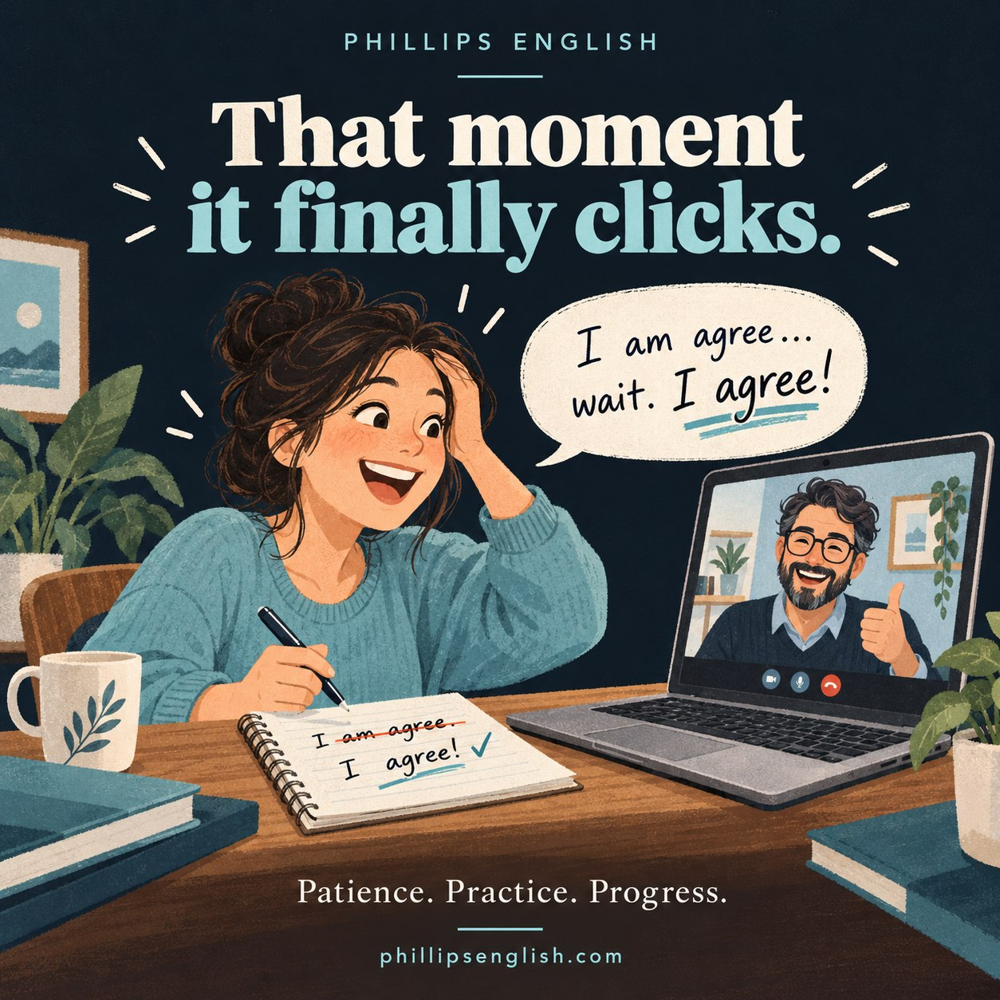

That little sentence makes me ridiculously happy as a teacher.
We might have practised the same correction several times. Then, halfway through a conversation, the student stops, spots the mistake and corrects it before I say anything.
Lovely. It’s starting to stick.
Knowing the rule and using it are different skills
A student might know perfectly well that we say “I agree”, but “I am agree” still pops out when they’re busy explaining an opinion.
That doesn’t mean they haven’t listened. They’re trying to organise their ideas, find the vocabulary and keep the conversation going. An old habit can easily sneak back in.
Understanding a correction is one step. Using it naturally while speaking takes practice.
Yes, we might need to practise it again
As teachers, we need patience here. If a student keeps making the same mistake, getting visibly frustrated hardly makes them more comfortable speaking.
I’ll bring the correction back into different conversations, give them another chance to use it and sometimes pause to let them work it out themselves.
“Have another look at that sentence.”
Often, that’s enough. Sometimes they need a little more help. Either way, we keep going.
Consistency also means noticing what’s changing. Are they making the mistake less often? Can they correct it with a small prompt? Are they starting to catch it themselves?
Those little details tell me much more than whether they’ve had one perfect lesson.
The moment they beat me to it
My favourite part is when a student catches an error before I do.
There’s often a little smile. They know exactly what I was about to say. Apparently, my voice has taken up residence in their head. Sorry about that 😉
But it’s lovely to see them taking ownership of their English. They’re beginning to hear the difference and make the correction themselves.
That’s why patience matters so much. Progress can be quiet for a while, then suddenly you hear something we’ve been practising come out naturally.
At Phillips English, that’s the kind of progress I want to help you make. We revisit what you need, practise it in real conversations and give it time to become a habit.
If you’d like to try a lesson with me, you can request a free 25 minute trial.